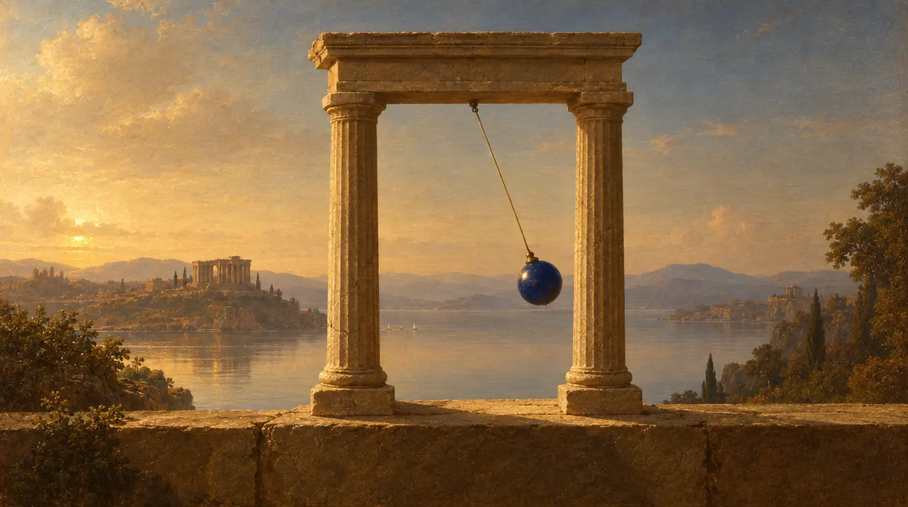
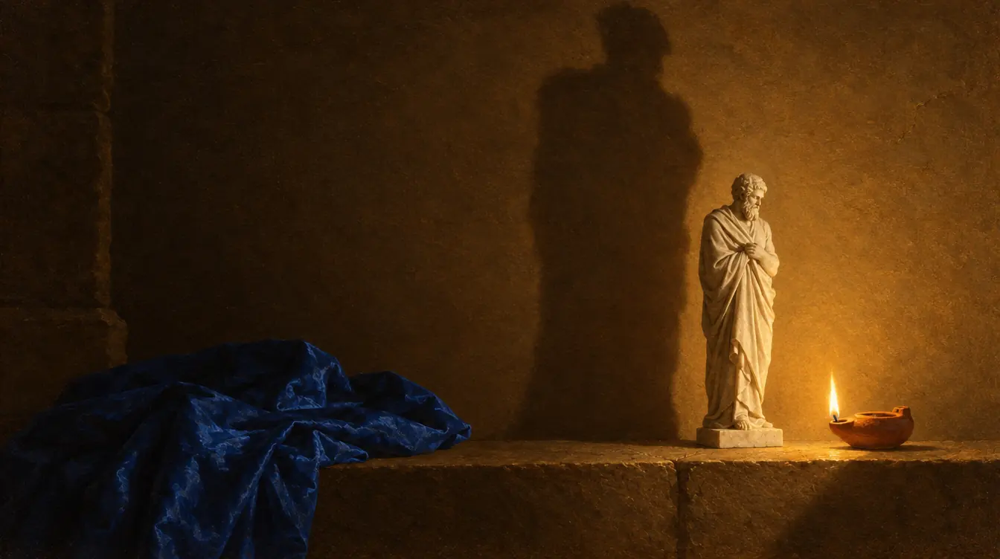
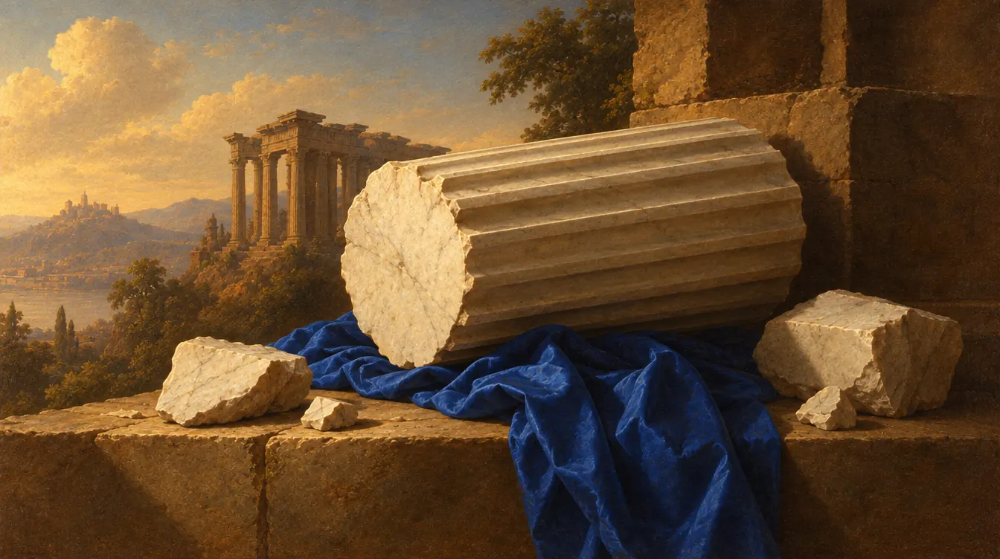

Plate I The mask
Beyond Good and Evil
Friedrich Nietzsche · 1886
Every philosophy as a hidden confession. Nietzsche asks what each value is for, and whom it serves.
I'm an Electrical & Computer Engineer at NTUA, specialising in electronics, control systems and embedded design — and I build the full-stack software that brings hardware to life. What began as coursework became the thing I want mastery over: I run a home lab, ship production apps, and care about the decisions behind the code as much as the code itself.
Away from the bench I read and write — history and philosophy, with a soft spot for Roman politics, Greek tragedy, Schopenhauer and Nietzsche (essays under Beyond). Since 2025 I've been shooting with a Sony A7 III — nature, moments, and macro shots of my own circuits.
STM32 · AVR · FPGA · Arduino · Jetson Orin Nano · PCB design (Altium) · oscilloscope · logic analyzer
PID · root locus · Bode/Nyquist · state-space · observers · LQR · kinematics · Denavit–Hartenberg
C · C++ · Python · TypeScript · JavaScript · Dart · MATLAB/Simulink · Bash
Flutter · Riverpod · Next.js · React · Django REST · PostgreSQL · PostGIS · Redis · Docker · Linux
Home lab STM32 Nucleo · ESP32 · Raspberry Pi 4 · Jetson Orin Nano · oscilloscope · function generator · logic analyzer · soldering station · CAN / RS-485 / Ethernet modules

Solo · Flutter + Django/PostGIS · Dec 2025 – Sep 2026
Problem Public-transit riders are stuck with schedules that drift from reality and clunky paper-or-card ticketing — no single place to see where the bus actually is and pay for the ride.
Approach A real-time transit companion: a Flutter/Riverpod app for iOS and Android over a Django REST + PostGIS backend that ingests the national GTFS-RT feed every 15 seconds — plus Stripe tickets delivered as Apple/Google Wallet passes.
Outcome Backend in production, iOS pilot on TestFlight, 1,400+ automated tests. Private repo — walkthrough on request.
Solo · Expo + Next.js + Supabase · Apr – Oct 2026
Problem Five-a-side in Cyprus runs on WhatsApp: players chase pitches and people through group chats, and owners keep the calendar in their heads.
Approach A two-sided marketplace. A player app to find a pitch, book, pay and fill the team; a Greek owner dashboard to run the week; and a lobby TV. All three sit on one Postgres database.
Outcome Launched in August, with the iOS app approved by Apple and early partner venues on the dashboard. Payments are in test mode until going live.
Solo · embedded · Jul – Aug 2026
Problem A relay module that runs vendor-language programs, a GNSS/INS sensor speaking NMEA, and the goal of a board that decides from its own position.
Approach A headless flasher driving the vendor’s own compiler, an NMEA decoder and geofence that run on the module in fixed-point, and a declared, audited data feed.
Outcome Working end to end on the bench, packaged for another engineer’s laptop.
Solo · Flutter (iOS + Android) + Supabase · May – Sep 2026
Problem Amateur theatre runs on paper scripts and group chats: actors rehearse alone, and directors juggle schedules, costumes and casting across a dozen threads.
Approach An end-to-end platform for theatre: each production is its own space, with roles that mirror the org chart, a call board, calendar, shared wardrobe and box office, plus a scene partner for every actor. It began as a rehearsal app for one actor.
Outcome In use by a 12-person cast; 829 automated tests. Private repo, walkthrough on request.
Solo · for a print shop · Django + HTMX · Sep 2026
Problem A print shop priced every job in the owner’s head and kept enquiries on paper, so no job could ever be rebuilt from a record.
Approach A cost-plus pricing engine that prices the way the owner already does, grown into the shop’s job board, intake and press queue. It’s in Greek, on the counter PC and his phone.
Outcome In daily use at the shop, across 45 owner-approved versions and 2,518 tests. Private repo, walkthrough on request.
Solo · Next.js + Postgres · Aug 2026
Problem Greek dictionaries online are slow and shallow — hard to scan, weak on cross-references, painful to explore a word's neighbourhood.
Approach Ρίζα, an open Modern Greek dictionary: 95,774 entries from Greek Wiktionary, with accent-insensitive search that resolves any inflected form to its entry — Next.js + TypeScript over Postgres.
Outcome Live, built in four days, 98 tests. Source private for now.
Works out each owner’s share of communal fees in Cypriot apartment buildings, using the legal Table B formula.
Booking and intake for a solo psychologist in Cyprus. Double-booking is impossible at the database level, and bookings mirror to Google Calendar.
Prices a business’s leftover stock to sell before a deadline, such as tonight’s dishes, and shows it to people nearby. Starting with restaurants in Athens.
Score-keeping for a regular card night: Estimation, Pilotta, Tichu, Biriba and Tavli, synced across phones, with a history of past games.
An offline practice companion for a beginner bouzouki player: songs, slowed-down loops, a metronome, setlists and gig recordings.
The Sunday Divine Liturgy in large, legible polytonic Greek, advanced by hand. Built for my father.
Specialising in Electronics, Systems & Embedded Computers (grad. June 2027). DSP, control-systems design, microcomputer systems, operating systems, VLSI.
Designed test plans for AI edge boards (Ethernet, RS-485, CAN, USB, CSI, GPIO, PCIe) and automated verification in Linux/Bash/Python, with documentation templates for the lab team.
Built a web app that pulls official fuel prices and ranks stations by price and distance — API integration, responsive UI, full dev documentation.
Honorary promotion for ethics and leadership; trained and guided a team of 10 through daily operations and safety protocols.
GPA 19.8/20 (2nd of 80). A-Levels: Physics (A), Mathematics (A), Greek (A*).
Plate I The mask
Friedrich Nietzsche · 1886
Every philosophy as a hidden confession. Nietzsche asks what each value is for, and whom it serves.


Plate II The pendulum
Arthur Schopenhauer · 1851
The readable Schopenhauer. Life swings between want and boredom, and the short essays on reading, thinking and noise show how to live with it.


Plate III The cave
Plato · c. 375 BC
What justice is, worked out by building a city in words. And the cave: prisoners who take the shadows on the wall for the world.

Plate IV The mean
Aristotle · c. 340 BC
Virtue as a habit rather than a rule: the mean between too much and too little, found by practice and judgement.

Plate V Where three roads meet
Sophocles · c. 441–401 BC
Oedipus answers the Sphinx and still cannot see himself. Antigone sets the city’s law against an older one.


Plate VI The fallen column
Edward Gibbon · 1776–89
Thirteen centuries of how a vast, working system comes apart: slowly, from within, in famously measured prose.
When I'm not at the bench I'm usually on a court or a pitch. Football's back in my week — I've signed for Aiantas Alethrikou here in Cyprus — and tennis is the quieter reset on the side: a slow lesson in stillness and patience that took a while to click. Sport keeps mind and body in the same room; it's where the head goes quiet enough for the careful work.
I'm open to freelance work and collaborations — embedded, full-stack, or the messy bit in between. The fastest way to reach me is email; I read everything.